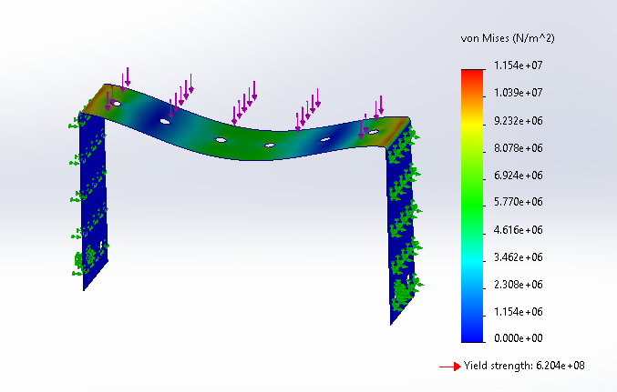

Mechanical design
Antenna torque-balancing system
An antenna tracking system needed a counterbalancing approach to accommodate the weight and torque of the moving assembly.
01 / Problem statement
An antenna tracking system needed a counterbalancing approach to accommodate the weight and torque of the moving assembly.
02 / My contribution
Researched torque-balancing concepts, proposed a sheet-metal mounting plate, and incorporated approximately 3 kg of counterweight into the concept.
03 / Engineering methods and tools
SolidWorks, sheet metal design, structural simulation, force and displacement analysis
04 / Results and outcomes
The original portfolio reports a maximum simulated displacement of 0.097 mm under a 50 N load. Physical validation is not documented.
Original project photos and drawings
_edited_edited_edited.jpg)

